CSCI 5607 (Fall 2025)
I’ve tried to set up this document both in terms of simplicity to understand my ray tracer implementation, but also make it easy to grade. At the top of this document, I’ve included the checklist of requirements, features, and extra credit I completed for the project. Each has check box showing it is complete, and a link to that section of the report. The body of the document walks through the ray tracer as if I were to explain it to someone, and is prefaced in the Overview
Grading
Requirements
-
✓ Arbitrary camera placement, film resolution, and aspect ratio
-
✓ Arbitrary scenes with spheres, triangles-no-normals (both without and with vertex normals), and arbitrary background colors
-
✓ Arbitrary materials, including diffuse and specular shading, reflections, and refractions
-
✓ Point and directional lights
-
✓ Shadows
-
✓ Recursion to a bounded depth
Additional Features:
-
✓ (5) Procedural texturing or normal mapping (checkerboard, wood, marble, mandelbrot set, etc..)
-
✓ (5) Spot lights
-
✓ (5) Texture mapping
Extra credit
-
✓ (5) Constructive Solid Geometry (union, difference, and intersection of primitives)
-
✓ (10) An acceleration structure: BVH, BSP, OctTree, etc. (measure the performance impact on different scenes!)
-
✓ (25) Ray trace (transformed) implicit surfaces with ray-marching (https://rb.gy/o0sefm)
Writeup
Overall, I found lots of useful resources online, but in particular I heavily relied on Computer Graphics from Scratch by Gabriel Gambetta, the articles from Inigo Quilez, and Ray tracing in one weekend. I was influenced by tinyraytracer and compile-time ray tracer to help optimize my code and consider different perspectives.
I am going to walk through talking about the ray tracer from the building blocks that allow us to make a complete ray tracer. I first start with the frustum, or the orientation of the camera and the viewport into the screen.
Then I describe our lighting, since you can’t have ray tracing without light! So we’ll go through ambient lighting, adding point, directional, and spot lights, how these lights can create shadows, and finally how light may interact with an object via reflection and refraction.
This sets the stage for talking about my approach to color and materials. I use the phong model to incorporate our components of light for ambient, diffuse, specular, and transmissive components of our materials, to compute the color of light seen by our camera. Then I talk about other ways of making interesting materials, by adding texture to shapes, both from an image (interpolated onto the shape) and using procedural texturing (function based texturing).
Once we have the basis for our viewport, our lighting, and our colors and materials, we are finally ready to look at something! I describe our different geometries. We built first from spheres and triangles. Using these primitives, we can then build more complex shapes by combining those primitives to make constructive solid geometries, using unions, difference, and intersection operators. Furthermore, instead of being limited to defining vertices and normals (for more complex lighting) for every point and shape, we can instead provide an analytic equation that defines a surface, and create implicit shapes. This opens the door to all sorts of geometries, from tori, cylinders, and even fractal geometries. We do this by creating a signed distance function, which simply returns positive values for points inside and negative values for points outside a geometric boundary.
Finally, I walthrough
Viewing Frustum
|
|


Camera placement, film resolution, and aspect ratio
camera_pos: x y zThe camera position is set by parsing the camera_pos field from the scene file and storing it in the eye variable (from parse_pga.h),which serves as the origin point for all primary rays cast into the scene. The camera system uses three bases to define the frustrum: the eye point, a forward direction vector, and an up vector; the camera’s right vector is computed via cross product and normalized to ensure orthonormality.
|
|
|
|
|
|
|
|


Clearly, our camera position is working properly. The above were all created with the following camera settings, replacing the specified camera_pos.
camera_pos: 0 0 0 camera_fwd: 0 0 -1 camera_up: 0 1 0 camera_fov_ha: 45
film_resolution: width height
Film resolution is specified directly in pixels via the film_resolution: width height command, and the aspect ratio is automatically computed from these dimensions.
This directly deterimines the overall number rays (up to some repeated sample factor) that we need to shoot, since we need to shoot rays for each pixel on our image plane.
|
|


camera_fov_ha: haThe half-angle vertical FOV (camera_fov_ha) is used to compute the distance d from the eye to the image plane using \(d = \angle_\text{HFOV half} / \tan(2 \angle_\text{VFOV half})\), which determines how wide or narrow the viewing frustum appears.
|
|
|
|


Lighting
Light sources
We have a few different types of lights. We have ambient light which is the uniform non-directional "world" light, point lights which emit light in all directions radially (and falls off with the inverse-square law), directional lights off at infinity such that emitted light is always parallel, and spot lights which emit light radially within a cone shape. In Types of lights we can see a simple example of each of these light sources and how they are additive in a overall rendering.
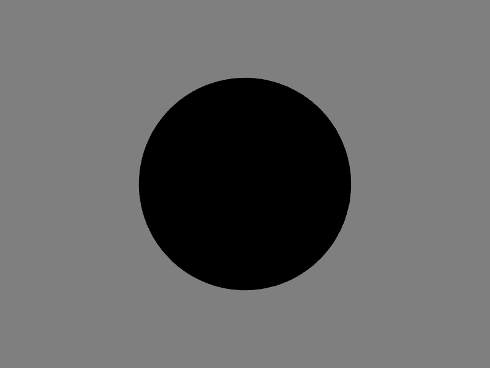 |
|
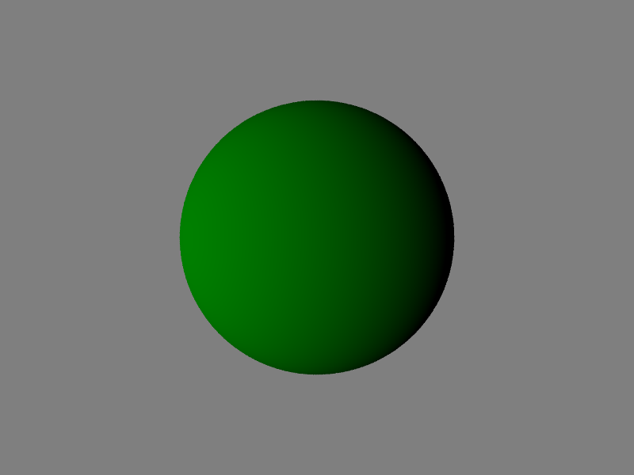 |
|
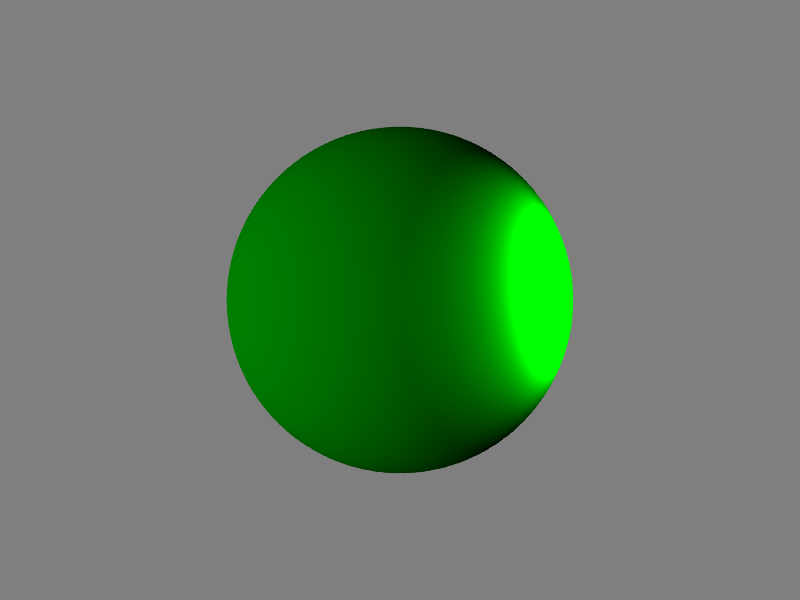 |


Ambient Lighting
ambient_light: r g bThe ambient light color (specified by ambient_light in the scene file) is multiplied component-wise with each (ar, ag, ab) coefficients (material’s ambient components, see the Materials section for more) to initialize the base illumination for every surface point, providing constant lighting independent of geometry or light positions.
spot light with inner and outer angle
|
|
|
|


Ambient lighting provides a simple approximation of global illumination by applying a uniform light contribution to all surfaces in the scene. The ambient contribution is computed by multiplying the global ambient light color by each surface’s material ambient color, ensuring that shadowed areas are never completely black and providing realistic fill light throughout the scene. This technique is computationally efficient and effective for simulating light that has scattered multiple times throughout the environment, preventing harsh contrast between lit and shadowed regions.
Point Lights
point_light: r g b x y zThe raytracer implements both point lights and directional lights with physically accurate lighting models. Point lights are positioned at specific 3D locations and use inverse-square falloff \((\frac{1}{d^2})\) to simulate realistic light attenuation, making them ideal for localized light sources like lamps or torches. See Types of lights for examples. Below the left diagram from Gambetta, showing two point lights a different positions will have different incident \(\vec{l}\) at point \(Q\). The right diagram shows a point light will have different incident vectors when hitting a flat object.
|
|


And here’s some examples with different point lights
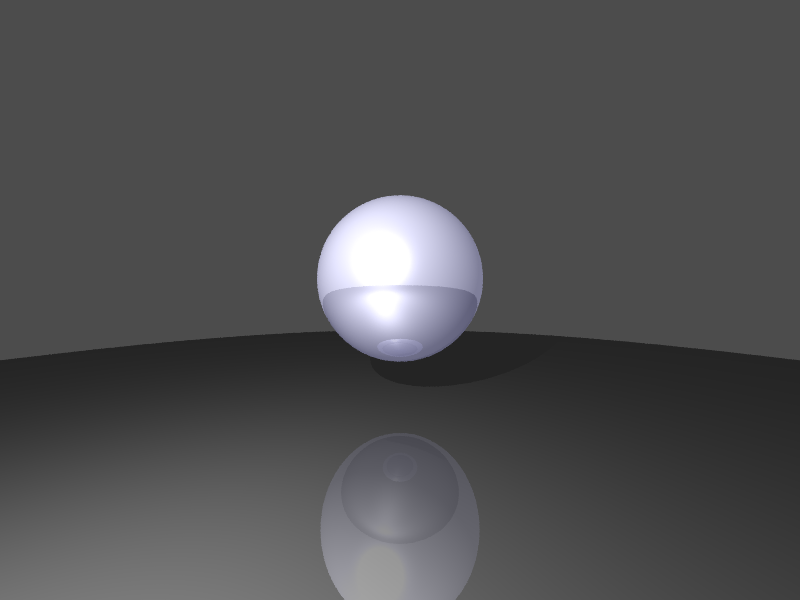 |
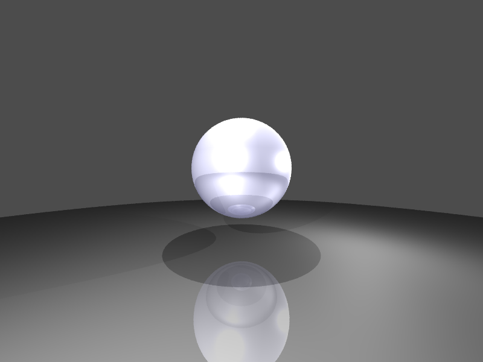 |
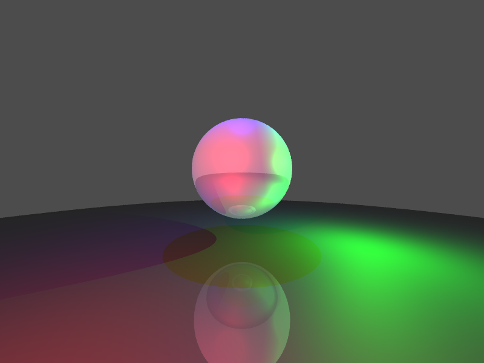 |
Directional Lights
directional_light: r g b x y zDirectional lights, on the other hand, are defined by a direction vector and have no distance-based attenuation, simulating infinitely distant light sources like the sun with parallel light rays. Both light types support full Phong shading with diffuse and specular components (see [phong-model] for details), and both cast shadows by tracing shadow rays (see Shadows for more) to test for occlusion from other objects in the scene. See Types of lights for examples. Below is a diagram from Gambetta, showing two directional lights at different positions (with the same direction, here our x y z), will emit parallel rays, since these are simply a light source at infinity (or in PGA, a light source with a direction).

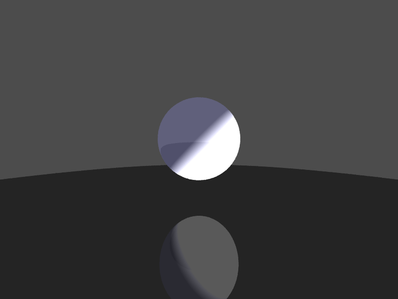 |
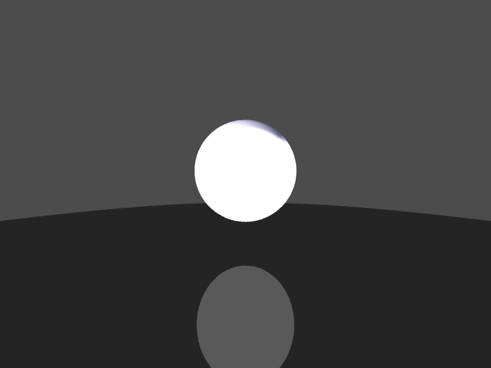 |
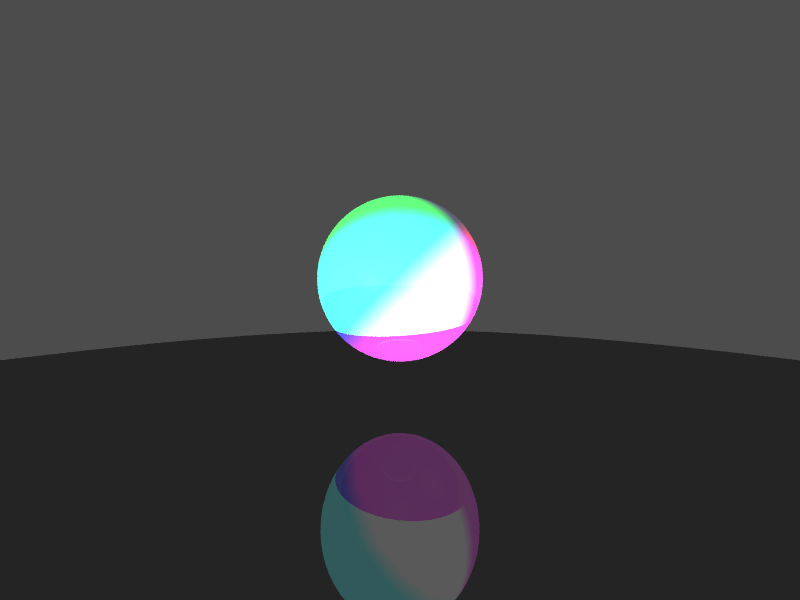 |
Spot Lights
spot_light: r g b x y z dx dy dz angle1 angle2Spot lights extend the point light model with directional constraints, creating cone-shaped illumination patterns defined by an inner and outer angle. Light intensity smoothly transitions from full brightness within the inner cone to zero at the outer cone boundary using cosine-based falloff. The spot light class is implemented in the Lighting.h header. See Types of lights for examples.
Below is a diagram of a spot light showing the point and the inner and outer angles on a spot light.

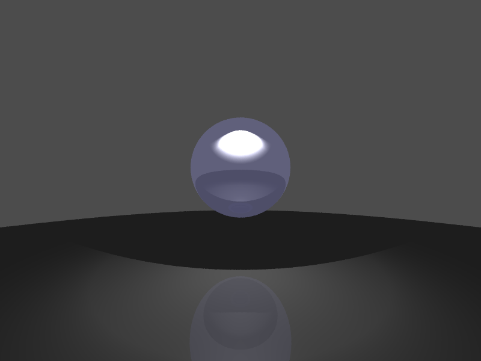 |
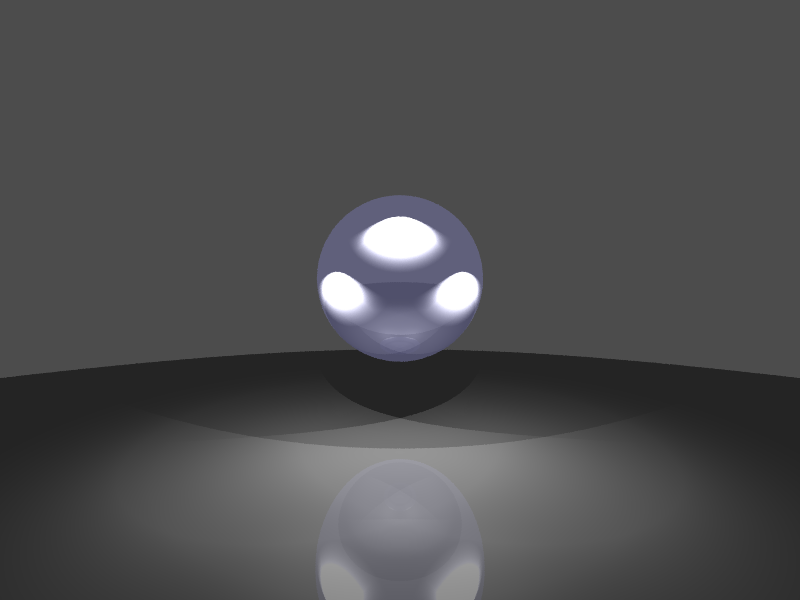 |
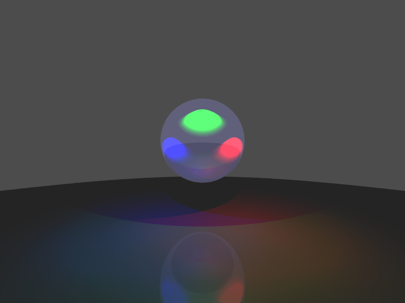 |
As we can see above, we have a nice 45 degree cone of solid light at the center and the 15 degree halo that drops off with a cosine falloff.
Shadows
Shadows are computed by casting shadow rays from each surface point toward every light source in the scene before calculating illumination. For point lights, the shadow ray tests for occlusion between the surface and the light position (with distance capped at the light distance), while directional lights use an effectively infinite maximum distance. If any geometry intersects the shadow ray before reaching the light, that light’s contribution is skipped for that surface point, creating hard shadows with crisp edges.
|
|
|
|


Reflection
Reflections are computed recursively by casting reflected rays from surface intersection points in the mirror direction determined by the surface normal. The reflection direction is calculated using the formula \(\vec{r} = \vec{d} - 2(\vec{d} \cdot \vec{n})\vec{n}\), where \(\vec{d}\) is the incident ray direction and \(\vec{n}\) is the surface normal.
I recursively trace this reflected ray with decremented depth to gather the color of what the surface "sees" in the reflection direction, supporting multiple bounces of light through the scene. The resulting reflected color is then blended with the surface’s local lighting by multiplying each RGB channel by the material’s specular reflection coefficients (sr, sg, sb), allowing colored or tinted reflections like metallic surfaces. For pure dielectric materials like glass, I use Schlick’s approximation of the Fresnel equations to physically blend reflection and refraction based on viewing angle, with grazing angles producing stronger reflections.
|
|
|
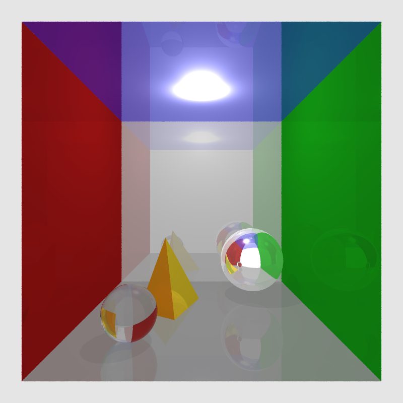 |


In the middle image we see a highly reflective mirror ball in the center. We are getting a nice reflected image, where all six colored spheres are visible from the warped perspective from reflecting of the mirror sphere. I placed the spheres at different angles to the sides, above, and in front of the mirror ball. You can even see some of the multiple reflections bouncing between spheres of the reflection itself. These, however are limited by our max depth. Furthermore, on the gear we see some interesting reflection with different levels and different normals. And finally, with the cornellbox, we see the reflective glass sphere on the back right of the image, as well as pleasing reflections off the ceiling, walls, and floors.
Refraction
Refraction is implemented using Snell’s law to compute transmitted ray directions when light passes between materials with different indices of refraction (IOR). The refracted direction is calculated as \(\vec{t} = \eta\vec{d} + (\eta c_1 - c_2)\vec{n}\), where \(\eta = n_1/n_2\) is the ratio of refractive indices, \(c_1 = -\vec{d} \cdot \vec{n}\), and \(c_2 = \sqrt{1 - \eta^2(1-c_1^2)}\). Fresnel equations determine the blend between reflection and refraction contributions based on viewing angle, creating physically accurate glass and transparent materials. When total internal reflection occurs (when \(c_2\) becomes imaginary), only the reflected component is computed.
Beer Lambert Law is not currently implemented for absorption within transmissive materials.
|
|


Scene
Colors and Background
background: r g b
Colors in the raytracer are represented as floating-point RGB triplets and are clamped to the [0,1] range before being converted to 8-bit values for output. The background color is specified in the scene file using the background command and is returned when a ray fails to intersect any geometry in the scene. Color interpolation is performed linearly during operations like material blending and multi-sample anti-aliasing, ensuring smooth gradients and transitions throughout the rendered image.
|
|
|
|


We use a similar understanding of color for all the colors that are being rendered on our screen. This applies to lights and material properties. I think that this example, show above in Spot Lights nicely shows off the color mixing in our ray tracer. As you can see we get a nice fuschia with mixing red and blue light (mixed with some dark grey from the ground), and then we have this nice gradient from cyan to yellow in the middle, and then on the farthest edge of the reflected shadow we have a nice area of green.
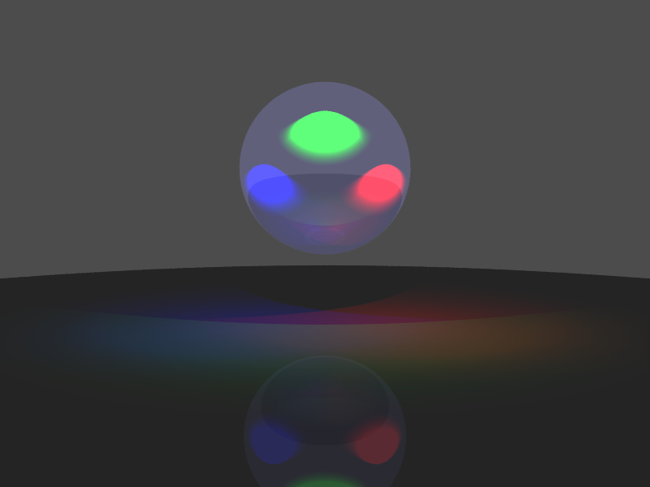
Materials
material: ar ag ab dr dg db sr sg sb ns tr tg tb ior
Materials define how surfaces interact with light through four color components: ambient (ar,ag,ab), diffuse (dr,dg,db), specular (sr,sg,sb), and transmissive (tr,tg,tb), along with a Phong exponent (ns) and index of refraction (ior). The final visible color at each surface point is computed by combining the ambient contribution, diffuse lighting from all visible lights, specular highlights, and optionally reflected/refracted light from recursive ray tracing. Each material component is multiplied with the corresponding light contribution and summed to produce the final pixel color, which is then clamped and tone-mapped for display.

# Glass sphere in the center material: 0.2 0.2 0.2 0.2 0.2 0.2 0.7 0.7 0.7 50 1 1 1 1.3 sphere: 0 0 4 1 # Cyan metallic sphere with high diffuse material: 0.3 0.3 0.3 0 1 1 0.4 0.4 0.4 80 0 0 0 1 sphere: -0.8 -0.25 3 0.4 # Dark blue sphere diffuse but not transmissive material: 0.3 0.3 0.6 0.1 0.1 0.6 0 0 0 80 0 0 0 1 sphere: 1.8 -0.25 3 0.4 # Red metallic sphere, low diffuse, small transmissive material: 0.1 0 0 0.9 0.1 0.1 0.3 0.3 0.3 30 0 0 0 1 sphere: 2 0 7 1.8 # Green sphere behind glass to show refraction material: 0.0 0.7 0.0 0 1 1 0.4 0.7 0.4 80 0 0 0 1 sphere: 0 0.3 10 0.3 # Yellow mirror sphere, high diffuse and transmissive material: 0.6 0.6 0 0.6 0.6 0.6 1 1 0.6 100 0 0 0 1 0.9 sphere: -3 2 8 1.5
We see clear specular reflections on the yellow mirror sphere and the cyan sphere. We see clear diffuse shading on the dark blue sphere. We can see the power attenuation through the transmissive components on the glass sphere and the green sphere behind it. We see the color blending in the yellow mirror sphere with the red sphere reflection.
Phong lighting model
The Phong lighting model is used to compute local illumination at each surface point by summing ambient, diffuse, and specular components. The diffuse term uses Lambert’s cosine law \(I_d = k_d(\vec{L} \cdot \vec{N})\) where \(\vec{L}\) is the light direction and \(\vec{N}\) is the surface normal. The specular term uses the Phong reflection model \(I_s = k_s(\vec{R} \cdot \vec{V})^{n_s}\) where \(\vec{R}\) is the reflected light direction, \(\vec{V}\) is the view direction, and \(n_s\) controls highlight sharpness; we compute \(\vec{R}\) by reflecting the light direction around the normal rather than using the half-vector (Blinn-Phong) approximation.
Where \(N\) is the normal to the surface, \(V\) is the direction of the camera, \(L\) is the direction of the light, and \(R\) is the direction reflection from the surface. The \(I_i\) terms correspond to the emissive \((I_E)\), ambient \((I_A)\), diffuse \((I_D)\), intensity \((I_s)\), reflective radiance \((I_R)\), and refractive radiance \((I_T)\) of the light. The constant \(K_i\) terms correspond similarly to the ambient response \((K_A)\), diffuse response \((K_D)\), spectral response \((K_S)\), reflective coefficient \((K_R)\), and transparency coeficient \((K_T)\). To other to terms are the Phong specular exponent \((n)\) and the shadow term \(S_L\), which is a boolean that describes if the ray is blocked by an object or not.
Diffuse lighting
Diffuse lighting simulates matte surface reflection using Lambertian shading, where surface brightness is proportional to the cosine of the angle between the surface normal and light direction. For each light source, the diffuse contribution is calculated as
where \(I_{L}\) is the light intensity, \(K_D\) is the material diffuse color, \(\vec{N}\) is the surface normal, and \(\vec{L}\) is the light direction. The \(\max()\) function ensures that surfaces facing away from lights receive no diffuse contribution, and distance attenuation is applied for point lights.
|
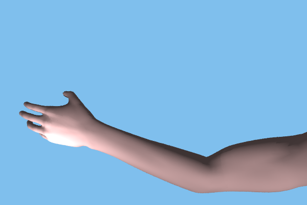 |

With the provided scenes with the hands, we see clear diffuse lighting. We see darker portions of the arm that are in shadow. All triangles in this scene have the same material, so the diffuse color is the same for all the triangles. However, we see the nice variation in color due to the normals on those triangles, since the dot product changes the intensity of that overall light.
Specular lighting
Specular lighting creates glossy highlights that vary based on viewing angle, simulating mirror-like reflections from smooth surfaces. The specular component is computed using the Phong model is
where \(K_S\) is the material specular color, \(V\) is the view direction, \(R\) is the reflected light direction, and \(n\) is the Phong exponent controlling highlight size, \(S_L\) is the shadow term, and \(I_L\) is the light intensity. Higher exponents create tighter, shinier highlights, while lower values produce broader, more matte reflections. Specular highlights only appear when viewing the surface from angles close to the perfect mirror reflection direction.

In this scene we get nice spectral lighting from 4 different lights. We can see it in the red portion of the pokeball clearly, and then then there’s nice spectral highlights on the button of the pokeball. I’ve made the black center sphere highly diffuse and not spectral, so there’s very little spectral components off of that part, and only a small contribution from reflections.
Textures
diffuse_texture: image filename.pngWe can use an image or a texture to map a pattern onto a primitive. For spheres, UV coordinates are computed lazily using spherical mapping - the surface normal is converted to spherical coordinates (\(\phi\) = longitude, \(\theta\) = latitude), then normalized to [0,1] range where \(u = \frac{\phi + \pi}{2\pi}\) and \(v = \frac{\theta + \frac{\pi}{2}}{\pi}\). For triangles, each vertex stores its own UV coordinates \((u_0, v_0)\), \((u_1, v_1)\), \((u_2, v_2)\), which are interpolated using the barycentric coordinates computed during ray-triangle intersection to determine the UV at the exact hit point. Once UVs are computed, the ImageTexture::sample() method clamps them to [0,1], flips the V coordinate (since images have top-left origin but UV space is bottom-left), converts to pixel coordinates, and returns the RGB color at that pixel. For implicit surfaces (further explained below), triplanar mapping projects the texture from three orthogonal axes (XY, XZ, YZ planes) and blends them based on the surface normal’s dominant direction for seamless results.
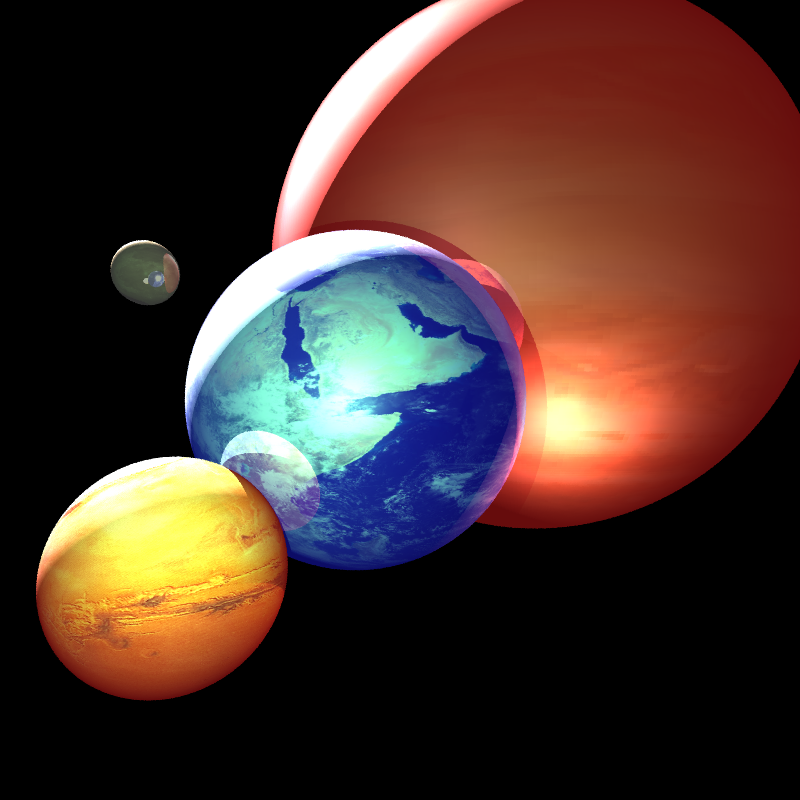
From the image above, we can see our textures getting applied to our spheres. We have Earth, Mars, Jupiter, and the Moon textures, with some added lighting.
diffuse_texture: checker r1 g1 b1 r2 g2 b2 scale
diffuse_texture: checker3d r1 g1 b1 r2 g2 b2 scale
diffuse_texture: wood r1 g1 b1 r2 g2 b2 scale turbulence
diffuse_texture: marble r1 g1 b1 r2 g2 b2 scaleProcedural texturing generates surface colors algorithmically rather than from image data, including 2D checkerboard patterns, 3D volumetric checkers, wood grain using turbulent noise, and marble patterns with Perlin noise. Textures can be applied to diffuse, specular, and normal map channels of materials, with UV coordinates computed from sphere parameterization for spheres and barycentric interpolation for triangles. For SDF objects without natural UV coordinates, triplanar mapping projects the texture from three orthogonal directions and blends based on surface normal, ensuring seamless coverage on arbitrary implicit surfaces without distortion.
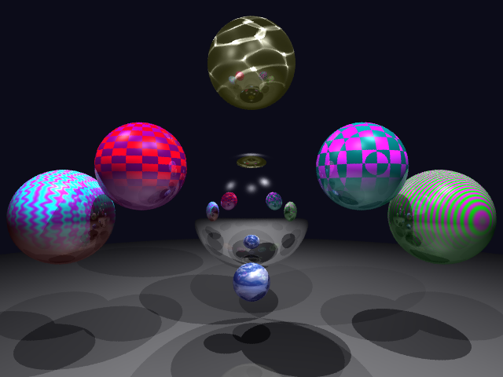 |
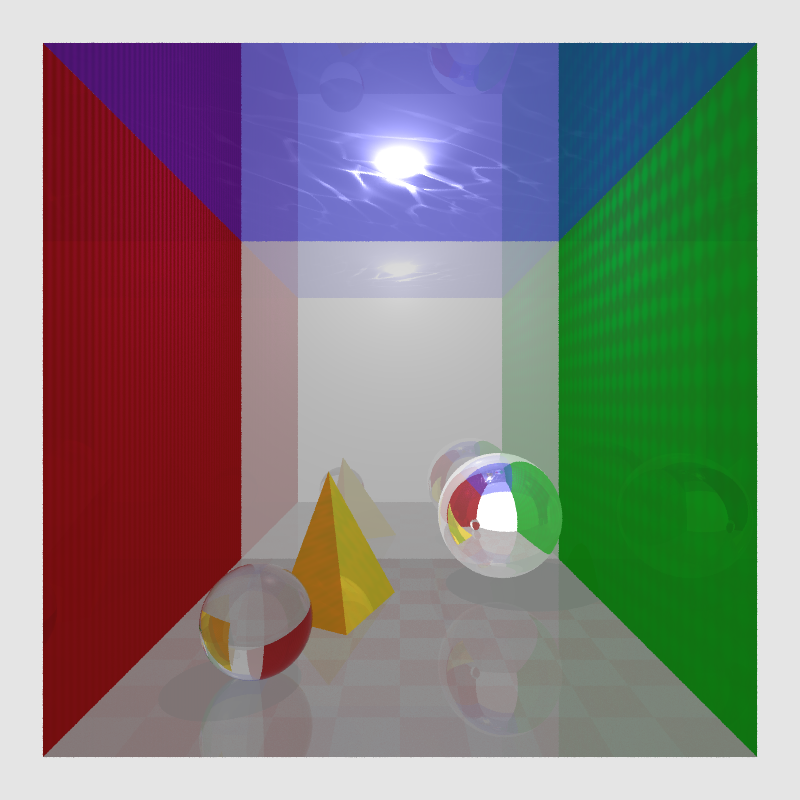 |
Above, we see some interesting procedural texturing in the spheres. From left to right, we have the cyan and magenta sphere with marble, the red and purple sphere with checker, the image center sphere with water caustics, the cyan and fuschia sphere with checker3d, and the green and magenta sphere with wood. The small blue sphere in front of the mirror ball also has image texturing from a cloud phto.
Above, in the cornell box, we see some interesting patterned texturing on the floor of the cornell box (checker3d), and on the red wall (wood), and on the green wall (marble) alongside patterned ceiling with the image for some water caustics. We get some interesting reflections, and also see that our diffuse texture is not being applied in places where we have shadows. This is a place we could improve our ray tracer, since the texture should really be everywhere on our surface.
Geometries
Spheres
sphere: x y z radius
Spheres are defined by a center point (x,y,z) and radius, with ray intersection computed analytically using the quadratic formula. The ray-sphere intersection finds parameter t, which is the intersection point on the sphere closest to the ray. We get the projection of the sphere’s center on the ray via \((L \cdot p_S)\) and calculate the distance from the center to the projection (to ensure that the ray actually hit the sphere). Then we get find those intersection points by getting the scaled radius based on the distance from the projection to the center. Finally, at the nearest point, we calculate the normal by \(||p_i - p_S||\).
|
|


Triangles
vertex: x y z triangle: v0 v1 v2
Triangles without vertex normals use the Möller-Trumbore intersection algorithm for efficient ray-triangle intersection testing. The algorithm computes barycentric coordinates \((u, v)\) and intersection distance \(t\) directly without explicitly computing the plane equation, using the formula \(\vec{O} + t\vec{D} = (1-u-v)\vec{V}_0 + u\vec{V}_1 + v\vec{V}_2\). The triangle’s surface normal is computed as \(\vec{N} = (\vec{V}_1 - \vec{V}_0) \times (\vec{V}_2 - \vec{V}_0)\) and remains constant across the entire triangle surface, creating flat shading.
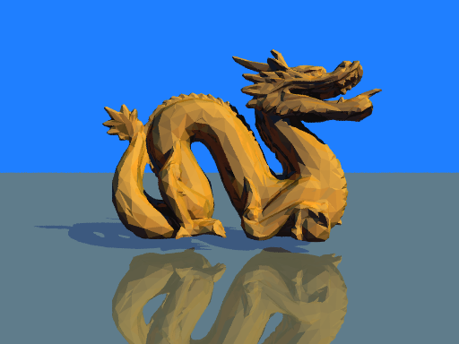 |
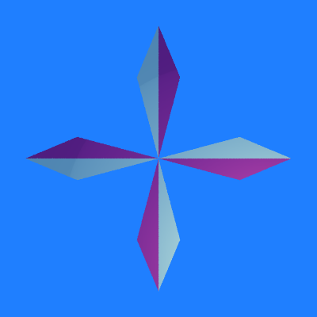 |
normal: nx ny nz normal_triangle: v0 v1 v2 n0 n1 n2
Triangles with vertex normals extend the basic triangle by interpolating normals across the surface using barycentric coordinates for smooth shading. At the intersection point with barycentric coordinates \((u, v)\), the shading normal is computed as \(\vec{N} = (1-u-v)\vec{N}_0 + u\vec{N}_1 + v\vec{N}_2\) and then normalized. This allows triangle meshes to approximate curved surfaces by smoothly varying the normal across faces, producing much more realistic shading than flat-shaded triangles while maintaining the same geometric representation.
|
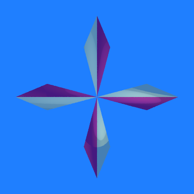 |
Constructive Solid Geometry
Constructive Solid Geometry (CSG) allows complex shapes to be built by combining primitive spheres using boolean operations, enabling the creation of sophisticated models like gears, mechanical parts, and architectural elements from simple building blocks. CSG objects are represented by a base sphere and one or more operand spheres, with the operation type (union, difference, or intersection) determining how they combine to form the final shape. The implementation follows an interval-based approach: ray intersection with CSG objects requires finding all entry/exit points (t-values) with component spheres, constructing intervals where the ray is inside each sphere, and then combining these intervals according to the CSG operation to determine the final surface boundaries.
sphere: x y z radius # Define component spheres
csg_union: base_idx op1 [op2]... # Combine with union
csg_difference: base_idx op1 [op2]... # Subtract
csg_intersection: base_idx op1 [op2]... # Keep only overlap
|
|
|


Our CSG implementation is defined in Geometries.h using the CSGObject class, which stores the operation type, base sphere, and a vector of operand spheres. The scene parser allows users to first define individual spheres using standard sphere: commands, then reference them by index in CSG commands. For example, defining sphere: 0 0 0 1.0 followed by sphere: 0.5 0 0 0.6 creates two spheres at indices 0 and 1; the command csg_difference: 0 1 then creates a CSG object where sphere 1 is carved out of sphere 0, producing a spherical cavity. Note, one limitation of my current implementation is that is only works with spheres. I did not have time to add triangles.
The CSG intersection algorithm in RayInteractions.h:intersectCSG() handles each operation type differently.
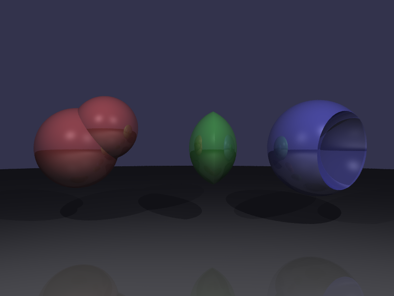 |
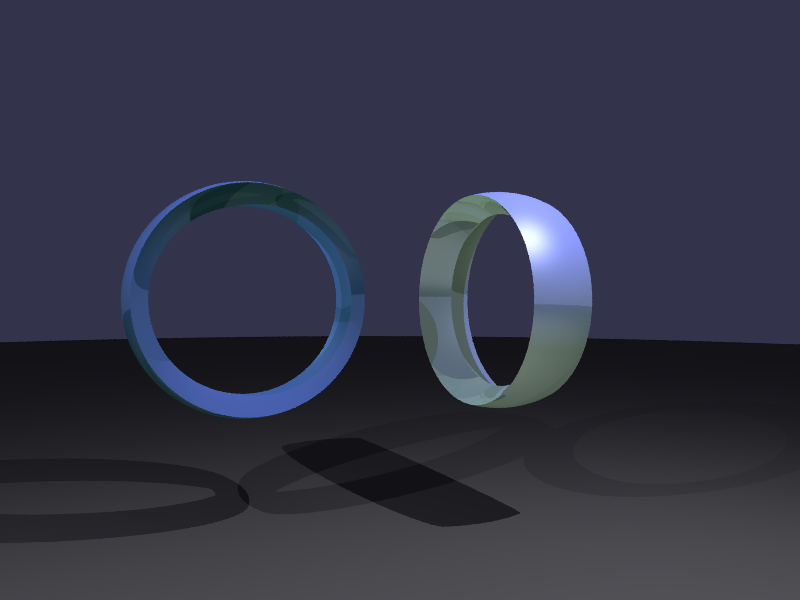 |
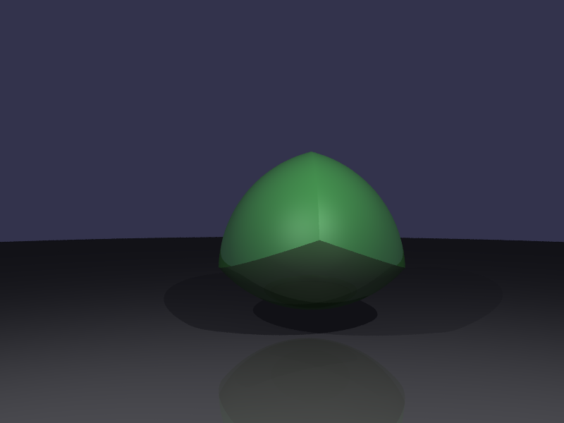 |
Union
Union operations combine multiple spheres into a single object by taking the closest intersection among all components, effectively creating a merged shape where any point inside at least one component sphere is considered inside the CSG object. Our implementation, the merged shape takes the original material of the first input shape, so base_idx. When a ray intersects a CSG union, the raytracer tests the ray against the base sphere and all operand spheres using standard ray-sphere intersection, collecting all intersection points and selecting the one with the smallest positive t value (closest to the camera), which is depicted below in the diagram by a0. The surface normal at the intersection point is taken from whichever component sphere was actually hit, ensuring proper shading at the boundaries between merged primitives. This is the simplest CSG operation computationally, as it requires only finding the minimum t value among all hits, with no complex interval arithmetic. Union operations are useful for modeling organic forms, collections of objects treated as a single entity, or quick approximations of smooth blending between shapes.

Difference
Difference operations carve away operand spheres from a base sphere, creating hollow or sculpted shapes by subtracting volumes from the base geometry. The ray intersection algorithm computes entry/exit intervals for both the base and all operand spheres, using interval arithmetic to construct the final surface: for each operand sphere, we compute where the ray enters (t_enter) and exits (t_exit) that sphere, then remove these intervals from the base sphere’s intervals to determine where the ray is inside the base but outside all operands. When a ray enters an operand sphere while inside the base (entering a carved-out cavity), the operand’s inward-facing surface becomes the new boundary, with its normal flipped to point into the cavity for proper lighting. This creates the distinctive "hollowed out" appearance where you can see inside the removed volume.
The algorithm works by first finding the base sphere’s entry and exit points, then iterating through each operand sphere to find subtractive intervals. If the ray enters an operand while inside the base (t_enter_operand is between t_enter_base and t_exit_base), we create a hit at t_enter_operand with the operand’s inward normal (flipped). Similarly, if the ray exits an operand while inside the base, the surface continues from that point. This allows complex carved shapes like Swiss cheese, mechanical parts with holes, or architectural elements with doorways and windows. The challenge is handling overlapping operands correctly and ensuring the closest valid surface point is returned.
Intersection
Intersection operations keep only the region where all component spheres overlap, creating the common volume shared by all primitives—essentially the "AND" operation in boolean logic. The ray intersection finds overlapping t-intervals by computing the maximum entry point (last sphere the ray enters) and minimum exit point (first sphere the ray exits) among all spheres. Only if the maximum entry is less than the minimum exit does a valid intersection exist, indicating the ray passes through a region inside all spheres simultaneously. The surface normal is taken from the sphere providing the maximum entry point (the last sphere the ray enters), as this sphere defines the visible boundary of the intersection volume.
Algorithmically, intersection CSG works by finding all t_enter and t_exit values for the base and operand spheres, then computing \(t_{\text{enter,final}} = \max(t_{\text{enter,base}}, t_{\text{enter,op1}}, t_{\text{enter,op2}, ...})\) and \(t_{\text{exit,final}} = \min(t_{\text{exit,base}}, t_{\text{exit,op1}}, t_{\text{exit,op2}, ...})\). If \(t_{\text{enter,final}} < t_{\text{exit,final}}\) and both are positive, the ray intersects the CSG object at \(t_{\text{enter,final}}\). This operation is useful for creating complex shapes by constraining geometry to specific regions, such as a sphere clipped by planes (using sphere-sphere intersection to approximate planes) or creating precise geometric constructions like geodesic domes or molecular models where atoms overlap at specific bonding sites.
Implicit Surfaces
# Basic SDF primitives
sdf_sphere: x y z radius
sdf_box: x y z half_x half_y half_z
sdf_plane_oriented: vertex_idx normal_idx
sdf_torus: x y z major_radius minor_radius
sdf_cylinder: x y z radius
sdf_capped_cylinder: x y z radius half_heightImplicit surfaces represent one of the most powerful and flexible approaches to geometric modeling in computer graphics, defining shapes mathematically through signed distance functions (SDFs) that return the distance from any point in space to the nearest surface. The "signed" aspect is key: the function returns positive values for points outside the shape, negative values for points inside, and exactly zero on the surface boundary. This mathematical representation enables several key advantages over explicit geometry. SDFs are resolution-independent—zooming in arbitrarily close to the surface never reveals polygonal facets or discretization artifacts, so we can get nearly infinite amount of details. In particular, fractals, organic forms, and mathematical surfaces (like Mandelbulb or Mandelbox) can be expressed compactly as formulas rather than massive polygon meshes.
In addition, we have SDF-based boolean operations which use smooth minimum/maximum functions to create organic blending between shapes, making more varied combinations and control over the combination, unlike CSG on explicit geometry which has sharp joins.
Finally, transformations like translation, rotation, and scaling of SDFs can often be implemented by transforming the query point rather than the entire geometry itself.
Our implementation in SDF.h defines an abstract SDF base class with a pure virtual evaluate(Point3D p) method that returns the signed distance at any point. Derived classes implement specific primitives:
Basic SDF Primitives:
-
SDFSphere: \(d(\vec{p}) = ||\vec{p} - \vec{c}|| - r\) where \(\vec{c}\) is the center and \(r\) is the radius. This is the simplest SDF, computing Euclidean distance to the sphere center and subtracting the radius.
-
SDFBox: Uses the formula \(d(\vec{p}) = ||\max(\vec{q}, \vec{0})|| + \min(\max(q_x, q_y, q_z), 0)\) where \(\vec{q} = |\vec{p}| - \vec{h}\) and \(\vec{h}\) is the half-extent vector. This elegantly handles both interior and exterior distances.
-
SDFPlane: \(d(\vec{p}) = \vec{n} \cdot \vec{p} - d_0\) where \(\vec{n}\) is the unit normal and \(d_0\) is the signed distance from the origin. Infinite planes are trivial in SDF form but complex in explicit geometry.
-
SDFTorus: Computed as \(d(\vec{p}) = \sqrt{(\sqrt{x^2 + z^2} - R)^2 + y^2} - r\) where \(R\) is the major radius and \(r\) is the minor (tube) radius. The formula works by first projecting to the ring in the XZ plane, then computing distance to the circular cross-section.
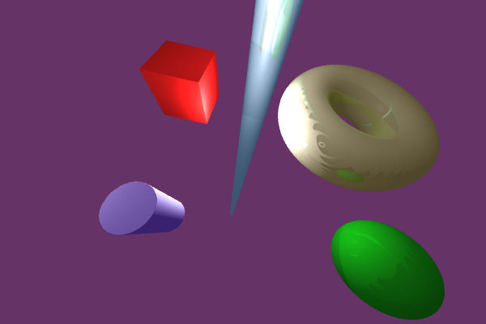
Oriented SDF Variants:
Many SDF primitives have "oriented" variants that support arbitrary rotations specified through normal vectors from the scene’s vertex/normal pools. For example, sdf_plane_oriented uses a vertex index to define a point on the plane and a normal index for orientation, computing the distance as \(d = (\vec{p} - \vec{p}_0) \cdot \vec{n}\). These oriented primitives use rotation matrices internally to transform query points into the primitive’s local coordinate system, evaluate the canonical SDF, and then transform results back to world space.
The oriented variants are particularly useful for: - Creating architectural scenes with walls at arbitrary angles - Defining complex mechanical parts with specific orientations - Building procedural scenes where orientation is computed algorithmically - Ensuring consistency with the vertex/normal pool system used for triangles
# Oriented SDF primitives (using vertex/normal pools)
sdf_plane_oriented: vertex_idx normal_idx
sdf_quad_oriented: vertex_idx half_width half_height normal_idx
sdf_box_oriented: vertex_idx hx hy hz normal_idx
sdf_torus_oriented: vertex_idx major minor normal_idx
sdf_cylinder_oriented: vertex_idx radius normal_idx
sdf_capped_cylinder_oriented: vertex_idx radius half_height normal_idx
|
|
|


Fractal SDFs:
# Fractal SDFs
sdf_mandelbulb: x y z iterations power
sdf_mandelbox: x y z iterations scale
sdf_menger_sponge: x y z iterationsFractals represent some of the most visually stunning applications of SDF rendering, creating infinitely detailed structures through iterative point transformations:
-
Mandelbulb: A 3D generalization of the Mandelbrot set using spherical coordinates. The SDF is computed by iterating \(\vec{z} \leftarrow \vec{z}^n + \vec{c}\) in polar form, tracking both the escape distance and derivative magnitude to compute the distance estimate \(d \approx \frac{1}{2} \log(r) \cdot \frac{r}{dr}\).
-
Mandelbox: Uses "box folding" and "sphere folding" operations iteratively, creating cube-like structures at multiple scales. The algorithm folds coordinates greater than 1.0, applies spherical inversions for points inside a fixed radius, then scales and translates.
-
Menger Sponge: A recursive cube-based fractal that subdivides and removes cross-shaped sections at each iteration level, creating a sponge-like structure with fractal dimension ≈ 2.727.
|
|
|


These fractals are expensive to render (requiring 8-20 SDF evaluations per iteration, times multiple marching steps), but produce results impossible to achieve with traditional polygon modeling.
SDF Boolean Operations:
Boolean operations on SDFs are implemented through simple arithmetic on distance values:
# SDF boolean operations
sdf_union: base_idx operand1 operand2...
sdf_intersection: base_idx operand1 operand2...
sdf_difference: base_idx operand1 operand2...
sdf_smooth_union: smoothing_factor base_idx operand1 operand2...
sdf_smooth_intersection: smoothing_factor base_idx operand1 operand2...
sdf_smooth_difference: smoothing_factor base_idx operand1 operand2...-
Union: \(d_{union}(\vec{p}) = \min(d_1(\vec{p}), d_2(\vec{p}))\) — take the minimum distance to either surface
-
Intersection: \(d_{intersect}(\vec{p}) = \max(d_1(\vec{p}), d_2(\vec{p}))\) — take the maximum distance (both must be satisfied)
-
Difference: \(d_{diff}(\vec{p}) = \max(d_1(\vec{p}), -d_2(\vec{p}))\) — subtract by negating the second field
These operations combine instantly at render time (unlike polygon CSG which requires complex mesh operations), and can be enhanced with smooth minimum/maximum functions for organic blending: \(smin(a,b,k) = \min(a,b) - \frac{h^2}{4k}\) where \(h = \max(k - |a-b|, 0)\).
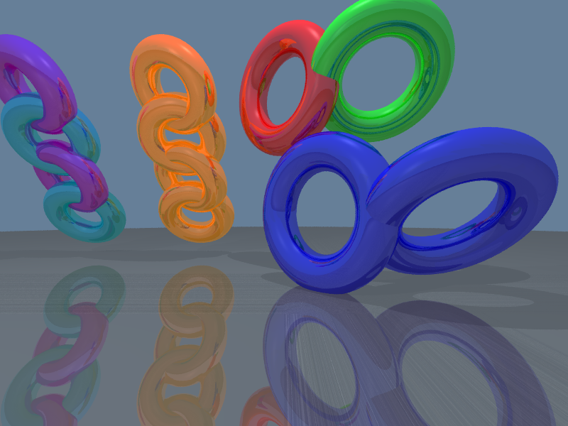 |
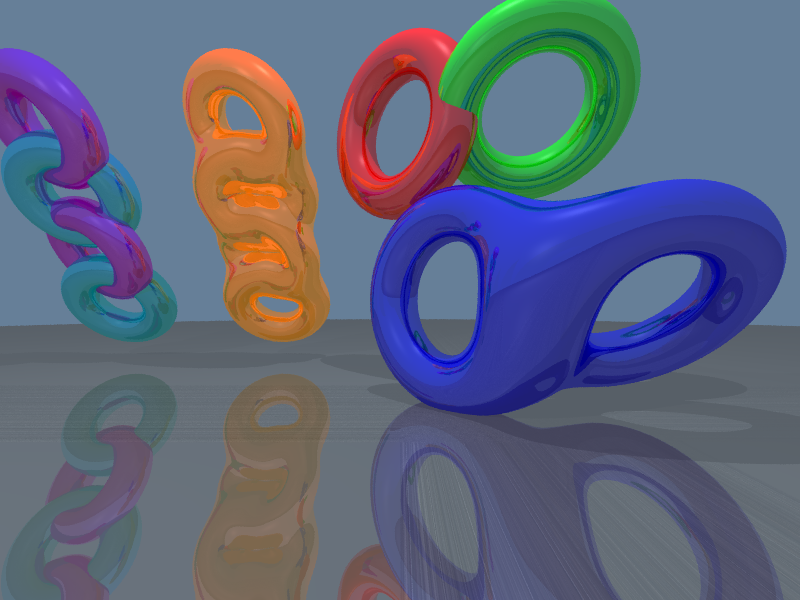 |
SDF Transformation Wrapper:
The SDFTransform class wraps any SDF primitive with a translation offset, evaluating \(d(\vec{p}) = d_{child}(\vec{p} - \vec{t})\) where \(\vec{t}\) is the translation vector. This allows primitives defined at the origin to be positioned anywhere in the scene without modifying their evaluation functions. More complex transformations (rotation, scale, shear) could be added by transforming the query point through the inverse transformation matrix before evaluation.
Ray Marching (Sphere Tracing) Algorithm:
Ray marching is the rendering technique used to find intersections between rays and implicit surfaces, differing fundamentally from the analytical intersection tests used for spheres and triangles. The algorithm exploits the Lipschitz continuity property of SDFs: the distance returned at any point is guaranteed to be a safe lower bound on how far we can move in any direction without missing the surface.
The sphere tracing algorithm in SDF.h:rayMarch() proceeds as follows:
-
Initialize: Start at the ray origin plus a small offset (\(t_0\) = 0.01) to avoid self-intersection on secondary rays. The offset prevents numerical issues where a reflected ray immediately re-intersects the surface it originated from.
-
March loop: For each iteration (maximum 128 steps):
-
Compute current position: \(\vec{p} = \vec{o} + t \cdot \vec{d}\) where \(\vec{o}\) is ray origin, \(\vec{d}\) is direction, \(t\) is accumulated distance
-
Evaluate SDF: \(dist = sdf.evaluate(\vec{p})\)
-
Hit test: If \(dist < \epsilon\) (epsilon = 0.003), we’ve found the surface
-
Distance test: If \(t > d_{max}\) (max = 100.0), the ray escaped the scene
-
Step forward: \(t \leftarrow t + \max(dist, \epsilon_{min})\) where \(\epsilon_{min}\) = 0.001 prevents infinite loops in degenerate cases
-
-
Normal computation: Upon hitting the surface, compute the gradient of the SDF using the tetrahedron technique, which evaluates the SDF at four points arranged in a tetrahedron around the hit point. This requires only 4 SDF evaluations compared to 6 for central differences, using the formula:
\[\vec{n} = \text{normalize}\begin{pmatrix} sdf(\vec{p} + \vec{k}_1) - sdf(\vec{p} - \vec{k}_1) \\ sdf(\vec{p} + \vec{k}_2) - sdf(\vec{p} - \vec{k}_2) \\ sdf(\vec{p} + \vec{k}_3) - sdf(\vec{p} - \vec{k}_3) \end{pmatrix}\]where \(\vec{k}_i\) are offset vectors arranged tetrahedrally with magnitude \(\delta\) (0.002).
Performance Optimizations:
Several optimizations make ray marching practical for interactive rendering:
-
Adaptive epsilon: The surface threshold epsilon is set relatively large (0.003) compared to geometric precision, trading perfect accuracy for 2-3x fewer steps.
-
Early termination: Rays that escape beyond 50 units after 10 steps are immediately culled, assuming they’ll never hit anything.
-
Minimum step size: Even when the SDF returns very small values, we advance by at least \(\epsilon_{min}\) = 0.001 to prevent getting stuck in nearly-flat regions.
-
Bounding box culling: Each
SDFObjectcaches a conservative AABB of its SDF’s bounds, allowing the BVH to skip entire SDF evaluations for rays that can’t possibly hit. -
Reduced step count: Maximum steps are capped at 128 (compared to 256-512 in production renderers) to prioritize rendering speed over perfect convergence.
Integration with Raytracer:
SDF objects integrate seamlessly with the existing raytracer infrastructure through the SDFObject geometry type in Geometries.h. Each SDFObject stores:
- A shared pointer to the root SDF (which may be a composite of transforms, booleans, and primitives)
- A material definition (same as other geometry types)
- Cached bounding box for BVH acceleration
- A flag (useTriplanar) indicating whether to use triplanar UV mapping for textures
When a ray intersects an SDFObject, the intersectSDF() function in RayInteractions.h calls rayMarch() with the SDF’s root node, converting the returned RayMarchResult (containing hit point, normal, and t-value) into a standard HitRecord for shading. This uniform interface allows SDFs to participate in all rendering features: shadows, reflections, refractions, texturing, and acceleration structures work identically whether the underlying geometry is explicit or implicit.
The main performance trade-off is that ray-marched SDFs require 50-128 function evaluations per ray (versus 1 evaluation for analytical primitives), making them 10-50x slower per intersection test. However, for shapes that would require millions of triangles to approximate (fractals, smooth CSG), SDFs remain the only practical option.
Optimization
Sampling
# Configured in raytracer.cpp: samplesPerPixel = 8
Anti-aliasing is achieved through stochastic supersampling, casting multiple rays per pixel with randomized offsets sampled from a Gaussian distribution (σ=0.3, clamped to ±0.5 pixels). For each pixel, 8 rays are cast with slightly different directions computed by perturbing the pixel center coordinates, and the resulting colors are averaged to produce the final pixel value. This technique effectively reduces jagged edges (aliasing artifacts) along geometric boundaries and produces softer, more photorealistic images compared to single-sample rendering, at the cost of 8x more ray-geometry intersection tests.
Recursion
max_depth: depth_value
Recursive ray tracing is used to compute global illumination effects (reflections, refractions) by spawning secondary rays at surface intersection points up to a maximum depth limit. Each time a ray hits a reflective or transmissive surface, new rays are cast in the mirror and/or refracted directions, with their color contributions weighted by the material’s reflective/transmissive coefficients and added to the local shading. The recursion terminates when the ray depth counter reaches max_depth or when the accumulated energy falls below a threshold, preventing infinite recursion in scenes with facing mirrors while capturing multiple bounces of light; typical values range from 3-6 depending on scene complexity and desired realism.
Parallelization
The raytracer uses OpenMP to parallelize the rendering loop across all available CPU cores, distributing pixels among threads with dynamic load balancing. The main pixel iteration loop is parallelized with #pragma omp parallel for schedule(dynamic, 16), where each thread maintains its own random number generator state to avoid contention and ensure reproducible results. Dynamic scheduling with a chunk size of 16 prevents load imbalance caused by varying ray complexity across the image (e.g., some pixels requiring many ray marching steps for SDFs while others hit simple spheres), achieving near-linear speedup; an 8-core system typically renders 7-7.5x faster than single-threaded execution.
Acceleration with Bounding Volume Hierarchy
# Automatically enabled by default accel: bvh # Can also use: simple, octree, hybrid, none
The Bounding Volume Hierarchy (BVH) is a spatial acceleration structure that dramatically improves ray tracing performance by organizing scene geometry into a binary tree of axis-aligned bounding boxes (AABBs), allowing rays to skip testing against large groups of objects through efficient hierarchical culling. Rather than testing every ray against every object in the scene (O(n) complexity per ray), the BVH enables logarithmic-time intersection queries by grouping nearby objects together and testing against progressively smaller bounding volumes. This acceleration structure is particularly effective for scenes with thousands of triangles, complex meshes, or mixed geometry types, providing 10-100x speedup over naive linear intersection testing in typical scenarios.
BVH Construction Algorithm:
Our BVH implementation in BVH.h uses a top-down recursive construction strategy with surface area heuristic (SAH)-inspired splitting. The construction algorithm begins by computing an AABB for each primitive in the scene (spheres, triangles, CSG objects, and SDF objects all have specialized bounding box computation in computeAABB()). The builder then recursively partitions the geometry using the following steps:
-
Base case: If the current node contains ≤4 primitives (configurable
maxLeafSize), create a leaf node storing direct references to those geometries. Leaf nodes perform actual ray-geometry intersection tests when traversed. -
Choose split axis: Compute the bounding box extent in each dimension (X, Y, Z) and select the longest axis for splitting. This heuristic tends to create more balanced trees and better spatial separation than random axis selection.
-
Sort primitives: Sort all primitives in the current partition by their centroid coordinate along the chosen axis. This enables efficient median-based splitting without explicitly computing SAH costs.
-
Split at midpoint: Divide the sorted primitive list at the median (\(mid = start + count/2\)), ensuring balanced subtree sizes and O(log n) tree depth.
-
Recurse: Recursively build left and right child nodes for the two partitions, propagating the split until all branches terminate in leaf nodes.
The resulting BVH tree structure uses std::unique_ptr for memory management, with each internal node storing its bounding box and pointers to left/right children, while leaf nodes store a vector of geometry pointers for intersection testing.
Ray-BVH Traversal Algorithm:
Ray traversal through the BVH uses a recursive depth-first search strategy that exploits the hierarchical nature of the structure. The traversal algorithm in intersectRecursive() follows these steps:
-
AABB intersection test: Before examining a node’s contents, test whether the ray intersects the node’s bounding box using the slab method. The ray-AABB test computes entry/exit t-values for each axis using \(t_{near} = \frac{box_{min,i} - ray_{origin,i}}{ray_{dir,i}}\) and \(t_{far} = \frac{box_{max,i} - ray_{origin,i}}{ray_{dir,i}}\), then checks if the overlapping interval \([\max(t_{near,x}, t_{near,y}, t_{near,z}), \min(t_{far,x}, t_{far,y}, t_{far,z})\)] is valid and intersects the ray’s positive direction.
-
Early termination: If the ray doesn’t intersect the node’s AABB, or if the intersection is beyond the current closest hit distance, immediately return without examining the node’s children. This culling is the key to BVH’s performance—large portions of the tree are pruned based solely on bounding box tests.
-
Leaf node processing: If the current node is a leaf (detected by checking if the geometry list is non-empty), iterate through all primitives in the leaf and perform actual ray-geometry intersection tests. Update the closest hit record if any intersection is closer than previously found hits.
-
Internal node traversal: For internal nodes, recursively traverse both left and right children. The order doesn’t matter for correctness, but traversing the nearer child first can provide better early termination in some cases. Our implementation traverses both children and combines results with logical OR, ensuring all potential hits are considered.
-
Closest hit propagation: The closest hit distance is maintained across all recursive calls, serving as a dynamic culling threshold. As closer hits are found during traversal, the updated distance allows more aggressive pruning of remaining branches.
Performance Characteristics:
The BVH’s effectiveness stems from its ability to eliminate large portions of the scene from consideration with simple AABB tests. For a balanced BVH with n primitives:
-
Construction time: O(n log n) due to sorting at each level
-
Memory: O(n) for internal nodes + leaf node storage
-
Traversal time: O(log n) average case for point queries, though pathological cases (long rays passing through many nodes) can approach O(n)
-
Ray coherence: Primary camera rays exhibit high coherence, often following similar paths through the BVH and benefiting from cache locality
In practice, scenes with 10,000+ triangles see 50-100x speedup, while smaller scenes (100-1000 primitives) see 10-20x improvement. The BVH also benefits all geometry types uniformly—spheres, triangles, CSG objects, and ray-marched SDFs all gain acceleration, with the structure’s overhead being minimal (typically <5% of render time for construction).
BVH Variants:
Our implementation includes several BVH variants accessible through the scene file accel: command:
-
bvh: Full recursive BVH with median splitting (default, best overall performance) -
simple: Simplified BVH variant (BVH_Simple.h) with different split heuristics -
hybrid: BVH-Octree hybrid combining spatial and object subdivision for specific scene types -
none: Disables acceleration for benchmarking (linear intersection testing)
Comparing these variants on complex scenes reveals that the standard BVH typically provides the best balance of construction speed and traversal performance, while the hybrid approach can excel in scenes with both dense meshes and scattered primitives.
Acceleration with OctTrees
accel: octree # Alternative spatial subdivision
An Octree variant is also implemented as an alternative acceleration structure, recursively subdividing 3D space into eight octants (children) and distributing geometry among cells that overlap the primitives' bounding boxes. Unlike BVH which adapts to geometry distribution, the Octree uses uniform spatial subdivision, making it particularly effective for evenly distributed scenes but potentially less optimal for clustered geometry. The octree implementation shares the same interface as the BVH, allowing direct comparison of performance characteristics; in practice, BVH typically outperforms Octree for most scenes due to better adaptivity, though Octree can be advantageous for spatially coherent ray patterns like camera rays in architectural scenes.
Art Submission
|
To create my submission, I followed the building procedure described above to create one pokeball. I then created two copies, and put them on a diagonal along z (to show nice shadows). To create the open pokeball, I needed to do two additional differences to create two halves of the interior black sphere. I then threw in a point light inside the ball to create the red glow, as if there’s something inside. I added four point lights in the environment to create some interesting lighting.
Access source code
You can access the source code here: https://drive.google.com/file/d/1gWPBcUY6EGGiIUYlj5ACjFjDTcB9en2X/view?usp=sharing, which was compiled on a linux machine.
g -fsanitize=address -fopenmp -O3 -std=c17 raytracer.cpp -o raytracer